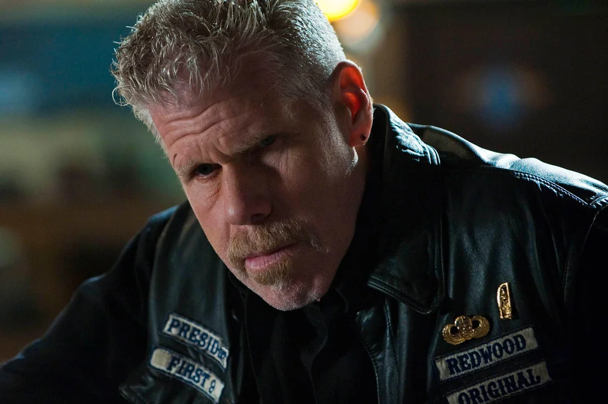
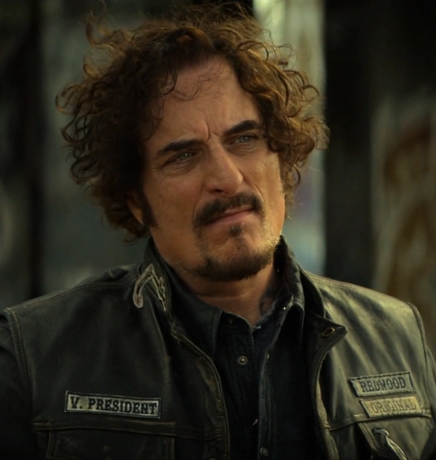
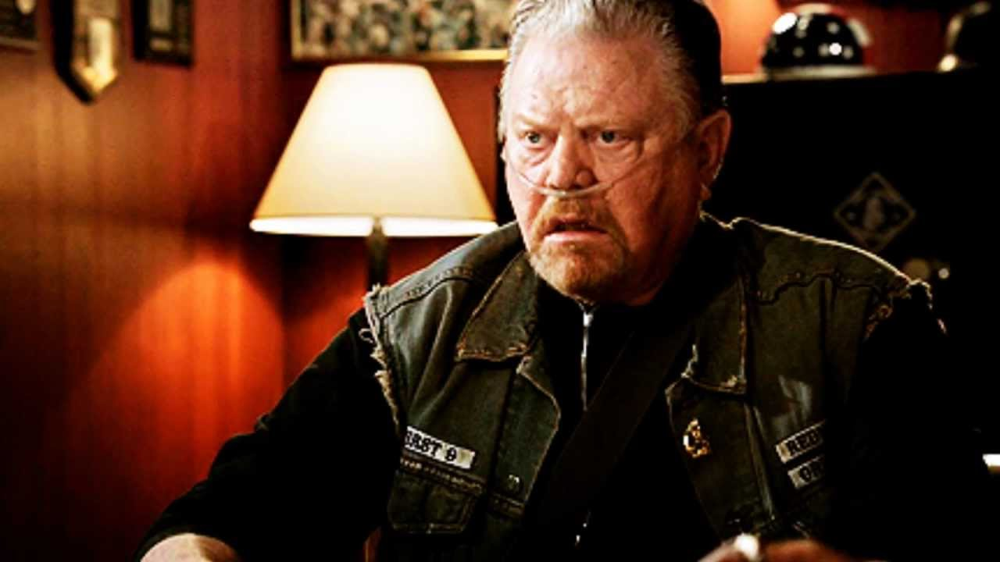
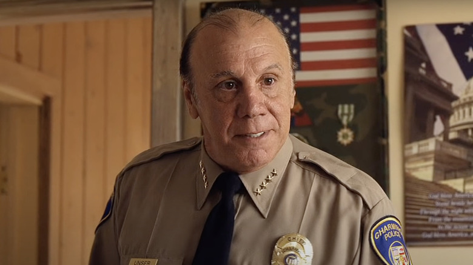

Jackson "Jax" Nathaniel Teller
Jackson "Jax" Nathaniel Teller was the former President of the Sons of Anarchy Motorcycle Club, Redwood Original charter and son of John "JT" Teller and Gemma Teller-Morrow on the FX original series Sons of Anarchy. Played by English actor Charlie Hunnam, Jax makes his debut in the series' premiere episode, "Pilot" in season one; playing a recurring role throughout the same and subsequent seasons.
Dr. Tara Grace Knowles-Teller
Dr. Tara Grace Knowles-Teller (June 21, 1980 - June, 2013) was a doctor at St. Thomas Hospital, wife of Jax Teller and a major character on the FX original series Sons of Anarchy. Played by American actress Maggie Siff, Tara makes her debut in the series' premiere episode, "Pilot", in season one; playing a recurring role throughout the same and subsequent seasons. Tara meets her demise in the season six finale, "A Mother's Work".
Gemma Teller-Morrow
Gemma Teller-Morrow (neé Madoc, 1957 - 2013) was the mother of Jackson "Jax" Teller, widow of John Teller and Clarence "Clay" Morrow, grandmother of Abel Teller and Thomas Teller II, and a major character on the FX original series Sons of Anarchy. Played by American actress and musician Katey Sagal, Gemma makes her debut in the series' premiere episode, "Pilot", in season one; playing a major recurring role throughout the same and subsequent seasons. Gemma meets her demise in the season seven episode, "Red Rose".Gemma appears in a flashback on Mayans MC, a spinoff of the FX original series Sons of Anarchy. She makes her only appearance in the series' premiere episode, "Perro/Oc", in season one.
Clarence "Clay" Morrow

Clarence "Clay" Morrow was the former President of the Sons of Anarchy Motorcycle Club, Redwood Original charter and a major character on the FX original series' Sons of Anarchy. Played by American actor Ron Perlman, Clay makes his debut in the series' premiere episode, "Pilot", in season one; playing a recurring role throughout the same and subsequent seasons. Clay meets his demise in the season six episode, "Aon Rud Persanta".
Alexander "Tig" Trager

Alexander "Tig" Trager is the Vice President and former Sergeant-at-Arms of the Sons of Anarchy Motorcycle Club, Redwood Original charter and a major character on the FX original series Sons of Anarchy. Played by Canadian actor Kim Coates. Tig makes his debut in the series' premiere episode, "Pilot", in season one; playing a recurring role throughout the same and subsequent seasons.Tig reappears in Mayans MC, a spinoff of FX original series Sons of Anarchy. He appeared in the season four finale, "When the Breakdown Hit at Midnight".
Harry "Opie" Winston
Harry "Opie" Winston was a member of the Sons of Anarchy Motorcycle Club, Redwood Original on the FX original series Sons of Anarchy. Played by American actor Ryan Hurst, Opie makes his debut in the series' premiere episode, "Pilot", in season one; playing a recurring role throughout the same and subsequent seasons until season five, where he meets his demise.
Juan Carlos "Juice" Ortiz
Juan Carlos "Juice" Ortiz was a member the Sons of Anarchy Motorcycle Club, Redwood Original charter and a major character on the FX original series Sons of Anarchy. Played by American actor Theo Rossi, Juice makes his debut in the series' premiere episode, "Pilot", in season one; playing a recurring role throughout the same and subsequent seasons. Juice met his demise in the season seven episode, "Red Rose" .
Piermont "Piney" Winston
 Piermont "Piney" Winston was the father of Harry 'Opie' Winston and co-founder of the Sons of Anarchy Motorcycle Club on the FX original series Sons of Anarchy. Played by American actor William Lucking, Piney makes his debut in the series' premiere episode, "Pilot", in season one. Playing a recurring role throughout the same and subsequent seasons. He met his demise in the season four episode, "Family Recipe", and was last seen as a corpse on the episode "Call of Duty", in the same season.
Wayne Unser
 Wayne Unser was the former Chief of the Charming Police Department on the FX original series Sons of Anarchy. Played by American actor Dayton Callie, Unser makes his debut on the episode "Seeds" in season one; playing a major recurring role through the same and subsequent seasons, Unser met his demise in the season seven episode, "Red Rose".